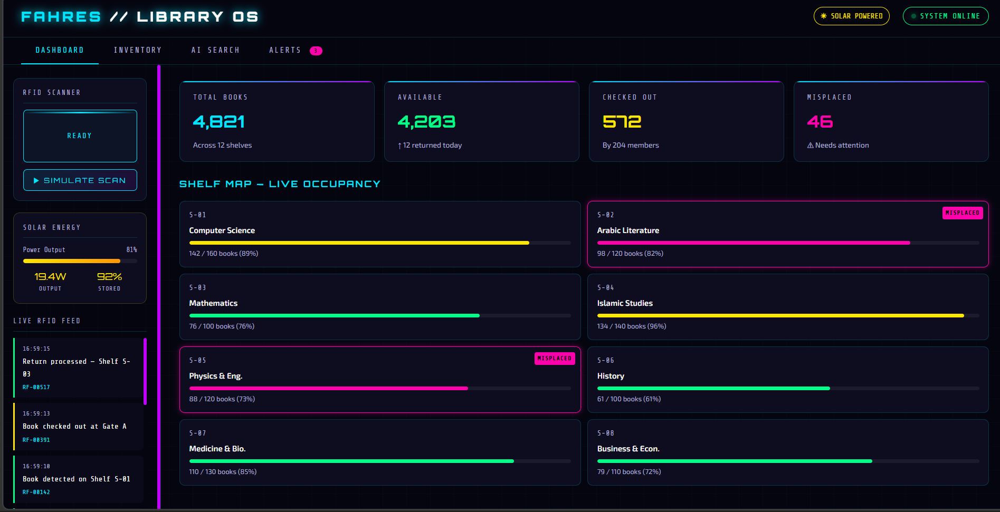
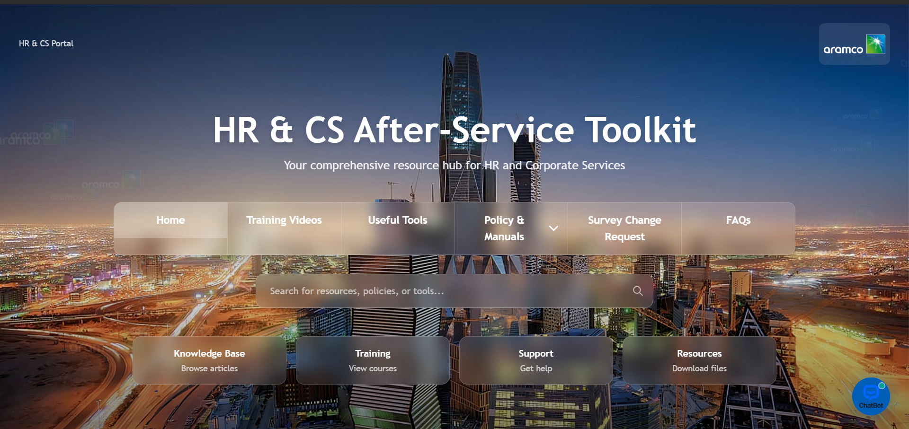
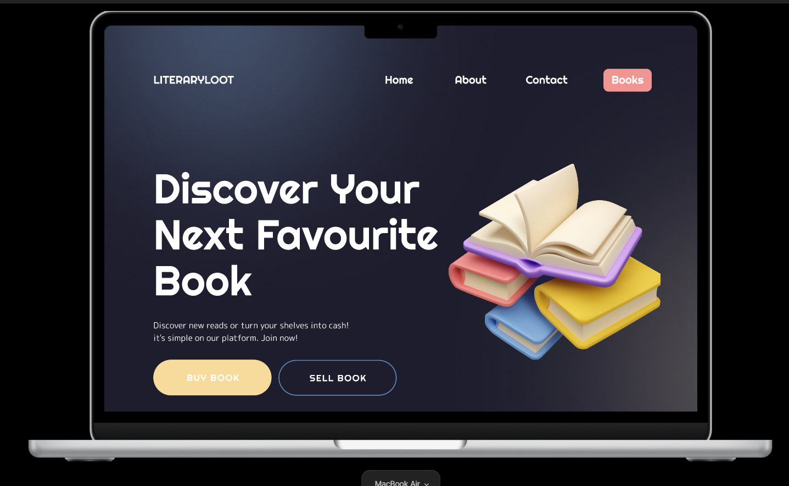
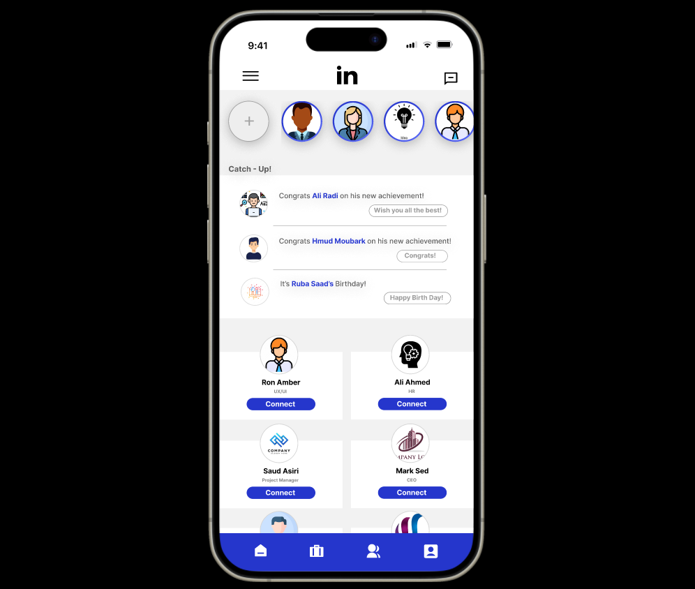
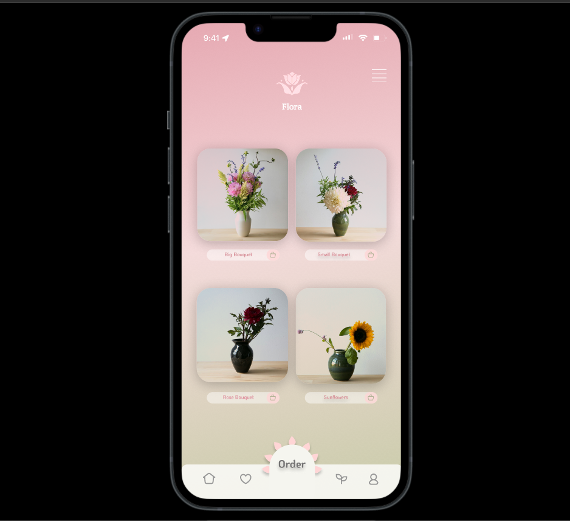
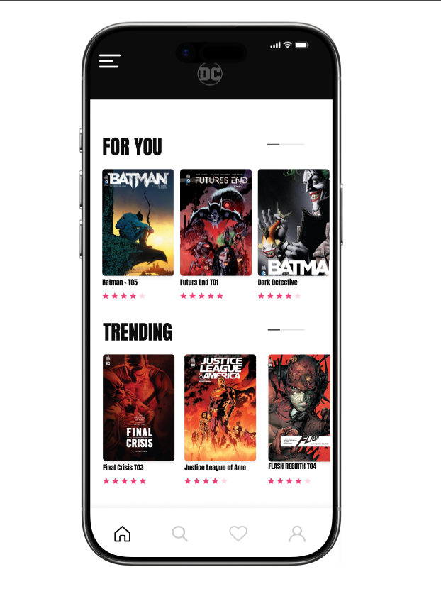
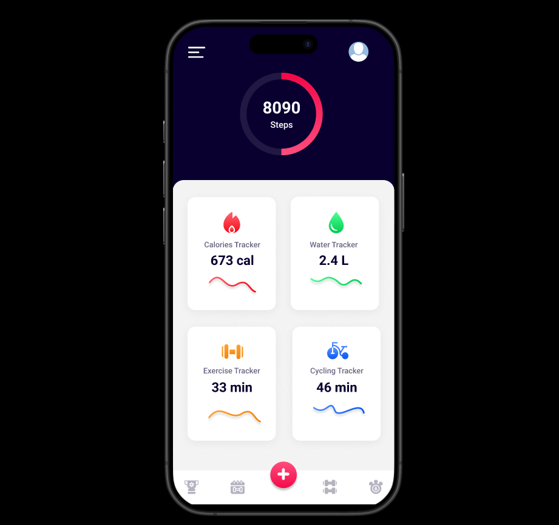

My Projects
Development work, UX/UI design, and hackathon builds.
Development Projects

Advanced Virtual Arduino AI Lab
A high-fidelity browser-based 3D simulation environment built with Three.js, allowing users to interact with virtual Arduino boards without physical hardware. Features an intelligent real-time circuit debugging engine.

TaskMaster – Task Management System
A full-featured web app supporting task creation, prioritization, due-date tracking, reminders, categorization, and live voice note input. Built for cross-device compatibility after benchmarking Trello, Asana, and Todoist.

Fahres – Smart Library System
A smart library system integrating RFID-based book identification for real-time location tracking and inventory management. Incorporated AI-assisted search and solar energy as a sustainable power source.
UX / UI Design Projects
Designed in Figma as part of Google UX Design certification and personal practice.

HR After-Service Toolkit
A digital toolkit designed to support employees navigating post-employment processes.
Figma
Bookstore Website
A clean, browseable bookstore web design focused on discovery and readability.
Figma
LinkedIn Redesign
A UX-focused redesign of LinkedIn addressing usability gaps in profile and feed navigation.
Figma
Flower App
A flower browsing and delivery app with a soft, elegant visual identity.
Figma
Comic App
A comic reading app designed for immersive, distraction-free storytelling.
Figma
Fitness App
A workout tracking and planning app with a bold, motivating visual design.
Figma